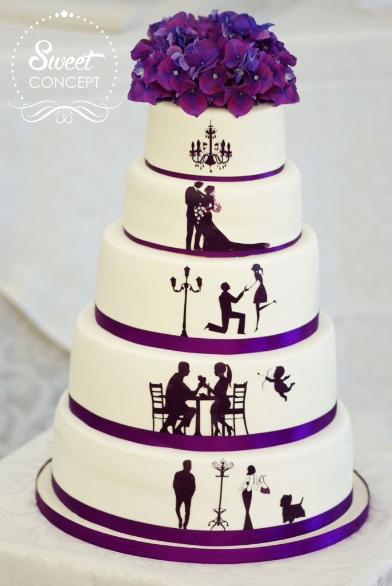
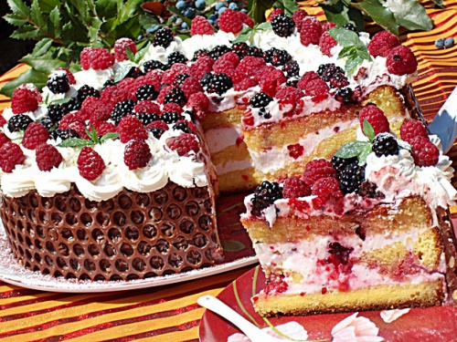
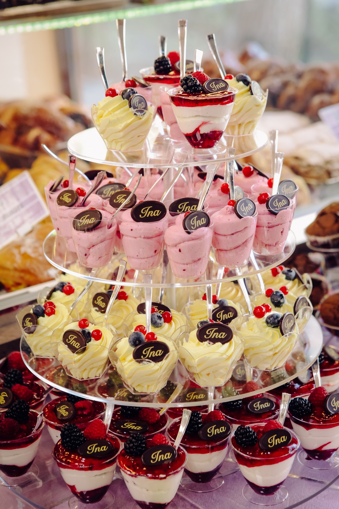

Conceptul de candy bar pentru evenimente vine din Statele Unite și relativ recent a căpătat popularitate și în Europa. Evenimentele importante nu se mai pot desfășura astăzi fără aceste mese de tip bufet suedez, cu deserturi frumos ornate. Candy bar-ul la o nuntă reprezintă un punct de atracție atât din punct de vedere vizual, dar e și modalitatea perfectă de a-i întâmpina pe invitații care adoră să fie răsfățați cu “ceva bun”. Alegerea unui candy bar pentru nuntă nu este tocmai cel mai ușor lucru, trebuie să existe un echilibru între design și gust pentru ca totul să fie perfect. Iată cinci elemente de care ar trebui să ții cont atunci când alegi candy bar-ul pentru nuntă:
Un prim pas important e să integrezi candy bar-ul în designul și tematica evenimentului tău. Cheia organizării unui candy bar fabulos constă în alegerea recipientelor, a elementelor decorative și, bineînțeles, a deserturilor. Toate elementele trebuie să aibă un numitor comun.
Stabilește împreună cu organizatorul nunții sau cu familia care va fi tematica nunții și cum poți integra candy bar-ul în întregul decor. Dacă te hotăraști să ai ca etalon principal culorile și nu o temă anume, atunci ar fi bine să te limitezi la maximum trei culori. De asemenea, este indicată alăturarea dintre candy bar și fruit bar, pentru o armonie a gusturilor și culorilor.
Numărul invitaților este esențial pentru realizarea candy bar-ului.
De obicei, se comandă cam două produse de persoană, dar numărul poate varia în funcție de dorința ta și de buget. Dacă nu ai un buget prea mare pentru candy bar nu trebuie neapărat să ai câte o piesă din fiecare desert pentru fiecare invitat pentru că nu toți vor vrea să guste din toate. Important este să ai câteva opțiuni și să fie cât mai variate.
O caracteristică importantă în alegerea candy bar-ului este diversitatea, de aceea încearcă să introduci componente variate cu ingrediente și arome diferite pentru a fi sigură că fiecare invitat poate găsi ceva pe placul lui (de exemplu: atât deserturi pe bază de ciocolată, cât și deserturi pe bază de fructe și deserturi fără lactate pentru persoanele vegane sau care au alergii). Invitații tăi ar trebui să se bucure de arome cât mai variate pentru a avea o experiență plăcută atât vizual, cât și culinar.
Este foarte important ca lângă fiecare desert pe care l-ai ales pentru nunta ta să existe o etichetă cu numele dulciurilor și cu lista de ingredinte. În felul acesta, nu doar că invitații vor ști din ce bunătăți gustă, dar dacă cineva are alergie la un anumit produs, vei evita situațiile neplăcute.
În plus, poți folosi și etichete de tip steguleț cu mesaje îmbietoare pentru invitați: “Take one!”, “Delicious”, “Pick me!”, “Yummy” etc. Ele aduc un plus de originalitate produselor pe care le-ai ales, înfrumusețează masa și îmbie la răsfăț.
Înainte ca invitații să deguste bunătățile pe care le-ai ales pentru candy bar, ei trebuie să fie atrași de aspectul acestora. Pentru a arăta cât mai bine este nevoie de o piesa centrală, mai înaltă sau cu un aspect impunător. Cel mai potrivit pentru acest loc ar fi suportul pentru macarons sau pentru brioșe, în mai multe etaje, sau de ce nu, un aranjament floral.
De regulă, pentru un candy bar, majoritatea produselor ar trebui să fie de dimensiune mică. Sunt și mai ușor de mâncat și îți dau posibilitatea să guști din cât mai multe sortimente.
Câteva dintre produsele pe care le poti alege pentru candy bar sunt: mini brioșe, cake pops, macarons, pannacotta, mousse, căpșune glazurate cu ciocolată, tarte cu fructe, mini choux a la creme, fursecuri, mini-plăcinte, mini-eclere, mini parfait sau frigărui cu fructe.
De asemenea, una dintre modalitățile prin care îți poți surprinde invitații la nuntă este combinația dintre ciocolată și alcool (mousse cu arome tari, bomboane cu lichior etc.).
În general, un candy bar ar trebui să conțină cam 90% produse de cofetărie și 10% produse din magazine, cum ar fi bombonele, jeleuri, etc.
Dacă îți organizezi nunta în sezonul rece, poți lua în considerare și varianta platourilor cu fructe de sezon, care pot completa cu succes candy bar-ul.
Alegerea fețelor de masă, a decorului și a etichetelor din hârtie pot aduce un plus de dinamism candy barului, însă nu uita să nu combini prea multe culori și texturi și să păstrezi totul cât mai simplu pentru un aspect rafinat.
| Un cadou aduce intotdeauna zambetul pe chipul celor dragi, iar ocaziile deosebite aduc cu ele intrebarile `Ai idee ce sa cumpar pentru el/ea?` sau `Oare o sa ii placa?` SweetCatering a fost conceput sa iti vina in ajutor cu idei dulci si sa devina lumea cadourilor inedite! |  |
| De ce sa ai incredere in produsele noastre? Pentru ca suntem o echipa de tineri carora le place sa descopere gusturi noi, iar pe cele mai bune sa vi le oferim voua. Produsele noastre sunt realizate artizanal, din ingrediente premium si pot fi personalizate in functie de decorul si compozitia dorita. Astfel ai cadoul perfect, achizitionat cu usurinta si livrat de un curier special, catre persoana careia vrei sa i-l daruiesti. |  |
| Mai mult decat atat, daca organizezi un eveniment important si cauti un furnizor pentru un candy bar, noi iti stam la dispozitie pentru ca totul sa fie pregatit exact cum iti doresti. Deserturile apetisante, personalizate in ton cu tematica evenimentului, vor fi momentul dulce al petrecerii despre care isi vor aminti cu drag toti invitatii. |  |